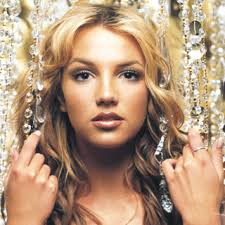

Britney Spears
Biografia
Britney Spears nasce il 2 dicembre 1981 in Louisiana (USA). Fin da giovane mostra talento per il canto e la danza, partecipando a programmi televisivi come The Mickey Mouse Club.
Il successo arriva nel 1998 con il singolo “…Baby One More Time”, che la consacra come icona pop mondiale.
Discografia essenziale

- …Baby One More Time (1999)
- Oops!... I Did It Again (2000)
- If you seek Amy (2008)
- Circus (2008)
Caratteristiche artistiche
- Voce riconoscibile e stile sensuale
- Coreografie iconiche
- Forte impatto visivo nei videoclip
- Capacità di reinventarsi nel tempo
Curiosità
- È soprannominata la “Principessa del Pop”
- Il videoclip di “…Baby One More Time” è uno dei più famosi di sempre
- Ha venduto oltre 100 milioni di dischi nel mondo
- Il movimento #FreeBritney ha attirato l’attenzione globale sulla sua vita personale